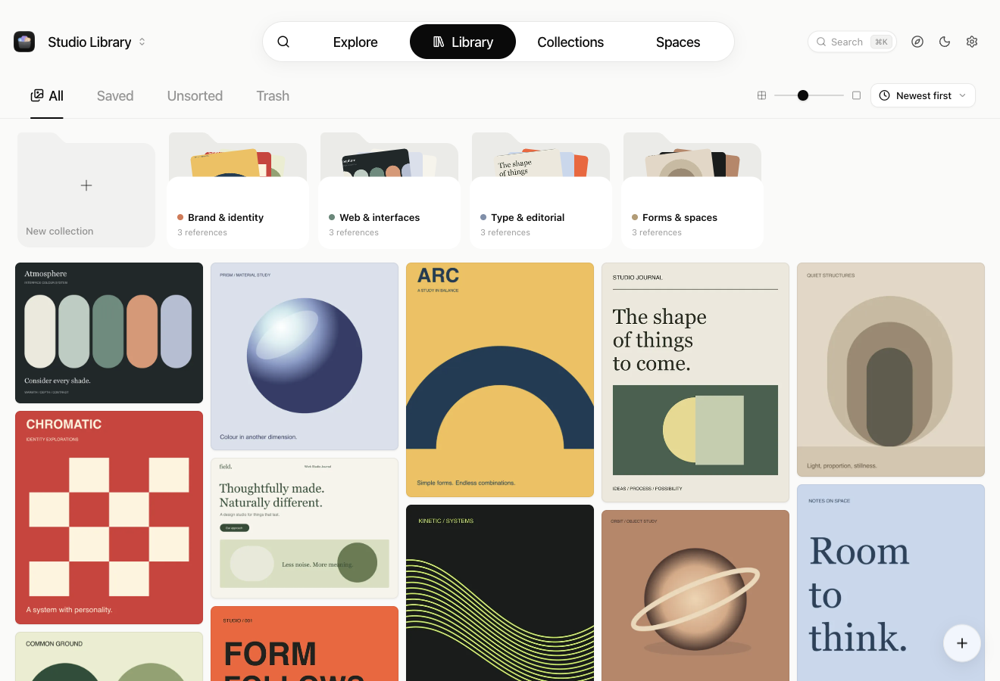
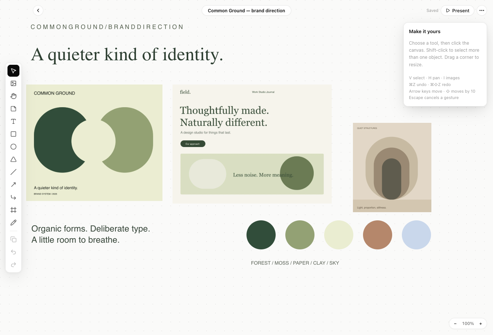

Articles you can read offline
X Articles arrive as the article itself — title, cover, text and pictures — and open as a readable page.
Find it when it matters. DesignOS gathers images, videos, pages and posts into one searchable library that lives on your Mac.
System type, hairline borders and glass only where it helps. Light and dark, with the shortcuts you'd expect from a Mac app.


Real screenshots of DesignOS 0.6.0 with original demo artwork.
Good references deserve better than a forgotten bookmark. Save them as you browse. Find them by what they say or how they look. Turn them into a direction.
01 Capture
Drop in files, paste from the clipboard, take a screenshot or save straight from your browser. Bookmarks and saves from the sites you already use arrive on their own — articles, videos and every slide of a carousel included.
Selected work, 2026
Right-click or tap an image
X Articles arrive as the article itself — title, cover, text and pictures — and open as a readable page.
Saved X and Instagram videos come in as real MP4s, playing in the grid and in detail.
Every slide stays together as one reference. Swipe through it, or use the arrow keys.
02 Find
Search titles, tags and the text inside images. Narrow by colour, collection, source or date. Turn on visual-meaning search when keywords aren't enough — it runs on your Mac.
RegularMediumBold
ABCDEFGHIJKLM 0123456789Nothing matches.
This library is live. Drop or paste an image anywhere on this page — it joins the grid, and never leaves this tab.
tag: in:"Collection" color: before: source: — narrow fast without leaving the keyboard.✦ Explore
Follow the websites you love. DesignOS keeps scrolling into their archives, with no post cap, and one tap saves a find to your library.
03 Spaces
Arrange references, text, shapes and drawings on a canvas. Present the board, or export it as PNG or SVG.
Warm, unhurried, a little bold.
Drag anything. Flick it and it carries its momentum.
And the details
Triage forgotten references one at a time. Swipe right to keep, left to trash, up to file it in a collection.
Every view is one shortcut away. Press ⌘K — it works here too.
Nest collections, add tags and notes, and keep a separate library for each project.
04 AI context
Connect an MCP client and your coding assistant can search your library and pull reference images while it builds. The bundled server opens your library read-only.
Find references for a pricing page in my DesignOS library.
● designos · search_references (query: "pricing page")
⎿ 3 references · library opened read-only
● Three good starting points: a three-tier layout with the middle plan highlighted, a dark dashboard for the usage strip, and a calm sign-in screen. I'll match the tier cards' spacing and keep the accent on the middle plan.
search_referencesText, tags, recognised text, colour and collection filtersget_referenceOne reference, with a larger imagelist_collectionsYour collections, nested, with countslist_tagsEvery tag and how often it's usedSettings → AI tools generates the command for Claude Code, or JSON for any MCP client. The server follows your active library and never writes to it.
05 Privacy
References live in plain folders with JSON metadata and a search index you can rebuild. There's no DesignOS account to create, and no DesignOS cloud to trust.
{
"kind": "image",
"title": "Tidewater",
"sourceUrl": "https://lumen.studio/work",
"note": "Colours for the spring site",
"tags": ["palette", "calm"],
"palette": [ … ],
"files": [ … ]
}The Mac app keeps your library; the browser extension saves into it from any page. Version 0.6.1.
curl -fsSL https://dhruv465.github.io/DesignOS/install.sh | sh
This release isn't notarized by Apple yet. If macOS blocks it, open System Settings → Privacy & Security → Open Anyway. The Terminal installer clears the quarantine flag for you — review it first.
Save images, pages and links from Chrome, Brave, Edge, Arc and Dia. Captures wait in a local queue if the app is closed.
Get it on the Chrome Web StoreBack up your library in Settings → Data first. Install DesignOS once; your library, settings and extension pairing carry over, and future updates arrive in the app.
Read the changelog